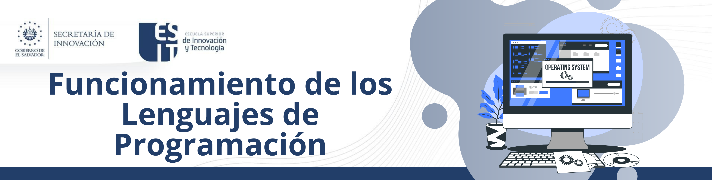
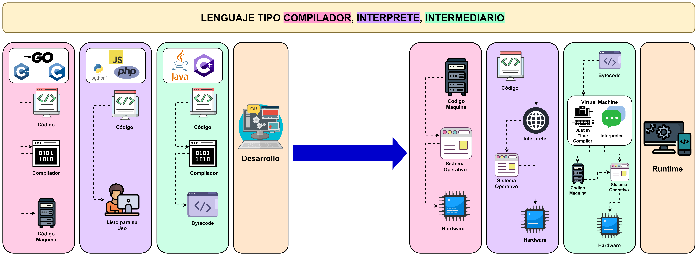

1. Sistemas Operativos
7. Funcionamiento de los Lenguajes
El proceso de traducción de un programa fuente escrito en un lenguaje de alto nivel a un lenguaje máquina comprensible por la computadora, se realiza mediante programas llamados “traductores”. Los traductores de lenguaje son programas que traducen a su vez los programas fuente escritos en lenguajes de alto nivel a código máquina. Los traductores se dividen en compiladores e intérpretes.
Intérpretes
Un intérprete es un traductor que toma un programa fuente, lo traduce y, a continuación, lo ejecuta. Los programas intérpretes clásicos como BASIC, prácticamente ya no se utilizan, más que en circunstancias especiales. Sin embargo, está muy extendida la versión interpretada del lenguaje Smalltalk, un lenguaje orientado a objetos puro. El sistema de traducción consiste en: traducir la primera sentencia del programa a lenguaje máquina, se detiene la traducción, se ejecuta la sentencia; a continuación, se traduce la siguiente sentencia, se detiene la traducción, se ejecuta la sentencia y así sucesivamente hasta terminar el programa
Compiladores
Un compilador es un programa que traduce los programas fuente escritos en lenguaje de alto nivel a lenguaje máquina. La traducción del programa completo se realiza en una sola operación denominada compilación del programa; es decir, se traducen todas las instrucciones del programa en un solo bloque. El programa compilado y depurado (eliminados los errores del código fuente) se denomina programa ejecutable porque ya se puede ejecutar directamente y cuantas veces se desee; sólo deberá volver a compilarse de nuevo en el caso de que se modifique alguna instrucción del programa. De este modo el programa ejecutable no necesita del compilador para su ejecución
Intermedio
Un compilador es un programa que traduce los programas fuente escritos en lenguaje de alto nivel a lenguaje máquina. La traducción del programa completo se realiza en una sola operación denominada compilación del programa; es decir, se traducen todas las instrucciones del programa en un solo bloque. El programa compilado y depurado (eliminados los errores del código fuente) se denomina programa ejecutable porque ya se puede ejecutar directamente y cuantas veces se desee; sólo deberá volver a compilarse de nuevo en el caso de que se modifique alguna instrucción del programa. De este modo el programa ejecutable no necesita del compilador para su ejecución.

Obra publicada con Licencia Creative Commons Reconocimiento Compartir igual 4.0